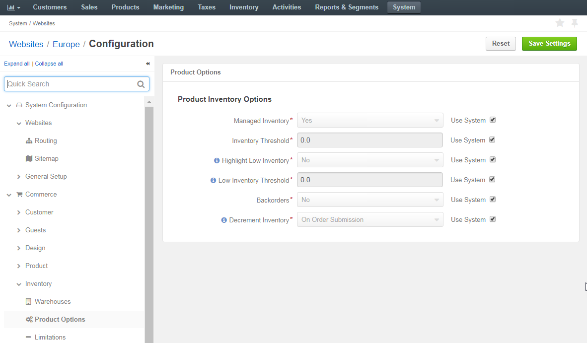

Warehouses and Inventory¶
This topic contains the following sections:
Overview¶
Inventory in OroCommerce helps you track the availability of your product in one or more warehouses, display it for the buyer and sales people, and automatically adjust it after every operation in OroCommerce.
You can create one or more warehouses, configure inventory management options, manage product inventory status and track product quantities in every warehouse.
Note
See a short demo on how to work with inventory and warehouses, or keep reading the step-by-step guidance below.
System-wide Inventory Configuration¶
OroCommerce groups inventory configuration options into the following categories:
Allowed Inventory Statuses¶
You can control the way product inventory is displayed for your buyers (in the OroCommerce Store Frontend) and sales people (in the OroCommerce Management Console). Moreover, you can restrict adding products with particular inventory status to an RFQ, customer order, quote, or a shopping list.
To change the default inventory statuses:
- Navigate to the system configuration (click System > Configuration in the main menu).
- Select Commerce > Inventory > Allowed Statuses in the menu to the left.
Note
For faster navigation between the configuration menu sections, use Quick Search.
The following page opens:

The following table describes the options available on the page:
Name Description Store Frontend: Visible Inventory Statuses A buyer can see products with the selected inventory statuses on the OroCommerce store frontend. Store Frontend: Can Be Added To RFQs A buyer can add Products with the selected inventory statuses when creating an RFQ on the OroCommerce store frontend. Store Frontend: Can Be Added To Orders A buyer can add Products with the selected inventory statuses when creating an Order on the OroCommerce store frontend. Management Console: Can Be Added To Quotes A sales person can add products with the selected inventory statuses to the Quotes using OroCommerce management console. Management Console: Can Be Added To RFQs A sales person can add products with the selected inventory statuses to the RFQs using OroCommerce management console. Management Console: Can Be Added To Orders A sales person can add products with the selected inventory statuses to the Orders using OroCommerce management console. Management Console: Can Be Added To Shopping Lists A sales person can add products with the selected inventory statuses to the Shopping Lists using OroCommerce management console.
To customize the list of statuses for any of the aforementioned options:
- Clear the Use Default box next to the option.
- Click on the inventory status to select/deselect it. Press Shift and click to select/deselect a range of items. Press Ctrl and click to select/deselect multiple items in no particular order.
Click Save.
Product Inventory Options¶
You can control the way product inventory is managed for every product in the OroCommerce product catalog on three levels – globally, per organization and website.
Configure Product Options Globally¶
To customize the default product inventory options globally:
Navigate to System > Configuration in the main menu.
Select Commerce > Inventory > Product Options in the menu to the left.
Note
For faster navigation between the configuration menu sections, use Quick Search.
The following page opens:
The following table describes the options available on the page:
Name Description Managed Inventory This options indicates whether the product inventory is handled by OroCommerce vs external application. Inventory Threshold A minimum quantity of the product that is treated as In stock. When a product quantity reaches this threshold value, the product inventory status falls back to Out Of Stock. Backorders A flag that indicates whether OroCommerce accepts backorders. When set to yes, buyers and sales people can order products in the quantities that are not currently available in the warehouses. The remaining portion of the order will be sustained until the product gets back in stock. Decrement Inventory A flag that indicates whether OroCommerce decrements inventory upon order. When both Decrement Inventory and Backorders are enabled, product quantity may get negative. Highlight Low Inventory This option indicates whether wholesale buyers are able to see that there might not be enough product left in stock for their purchase. Low Inventory Threshold The minimum stock level defined for the product. Reaching the defined level will trigger a warning message to the buyer in the front store. To customize any of these options:
- Clear the Use Default check box next to the option.
- Select Yes/No for the flag-like options, and type in the updated value for the threshold-like options.
Click Save Settings.
Configure Product Options per Organization¶
To customize the default product inventory options per organization:
Navigate to System > User Management > Organizations in the main menu.
For the necessary organization, hover over the More Options menu to the right of the necessary organization and click to start editing the configuration.
Select Commerce > Inventory > Product Options in the menu to the left.
Note
For faster navigation between the configuration menu sections, use Quick Search.
The following page opens:
The following table describes the options available on the page:
Name Description Managed Inventory This options indicates whether the product inventory is handled by OroCommerce vs external application. Inventory Threshold A minimum quantity of the product that is treated as In stock. When a product quantity reaches this threshold value, the product inventory status falls back to Out Of Stock. Backorders A flag that indicates whether OroCommerce accepts backorders. When set to yes, buyers and sales people can order products in the quantities that are not currently available in the warehouses. The remaining portion of the order will be sustained until the product gets back in stock. Decrement Inventory A flag that indicates whether OroCommerce decrements inventory upon order. When both Decrement Inventory and Backorders are enabled, product quantity may get negative. Highlight Low Inventory This option indicates whether wholesale buyers are able to see that there might not be enough product left in stock for their purchase. Low Inventory Threshold The minimum stock level defined for the product. Reaching the defined level will trigger a warning message to the buyer in the front store.
To customize any of these options:
- Clear the Use System check box next to the option.
- Select Yes/No for the flag-like options, and type in the updated value for the threshold-like options.
Click Save Settings.
Configure Product Options per Website¶
To customize the default product inventory options per website:
Navigate to System > Websites in the main menu.
For the necessary website, hover over the More Options menu to the right of the necessary website and click to start editing the configuration.
Select Commerce > Inventory > Product Options in the menu to the left.
Note
For faster navigation between the configuration menu sections, use Quick Search.
The following page opens:
The following table describes the options available on the page:
Name Description Managed Inventory This options indicates whether the product inventory is handled by OroCommerce vs external application. Inventory Threshold A minimum quantity of the product that is treated as In stock. When a product quantity reaches this threshold value, the product inventory status falls back to Out Of Stock. Backorders A flag that indicates whether OroCommerce accepts backorders. When set to yes, buyers and sales people can order products in the quantities that are not currently available in the warehouses. The remaining portion of the order will be sustained until the product gets back in stock. Decrement Inventory A flag that indicates whether OroCommerce decrements inventory upon order. When both Decrement Inventory and Backorders are enabled, product quantity may get negative. Highlight Low Inventory This option indicates whether wholesale buyers are able to see that there might not be enough product left in stock for their purchase. Low Inventory Threshold The minimum stock level defined for the product. Reaching the defined level will trigger a warning message to the buyer in the front store.
To customize any of these options:
- Clear the Use System check box next to the option.
- Select Yes/No for the flag-like options, and type in the updated value for the threshold-like options.
Click Save Settings.
Warehouses¶
After you created the warehouse in the Inventory > Warehouses section, you should enable and prioritize them to ensure that OroCommerce uses the most efficient and recommended strategy for inventory updates that happen during the Store operations.
To enable and prioritize warehouses:
- Navigate to the system configuration (click System > Configuration in the main menu).
- Select Commerce > Inventory > Warehouses in the menu to the left.
Note
For faster navigation between the configuration menu sections, use Quick Search.
The following page opens:

Enable as many warehouses as you need:
- If necessary, click +Add Warehouse.
- Select the warehouse name in the Choose a Warehouse list.
- Assign a numeric priority to the enabled warehouse (1 is higher, 100 is lower). Products will be ordered and shipped from the higher priority warehouses first.
Note
You can manage the list of enabled warehouses using the following actions:
- To disable a warehouse, click x to the right of the priority.
- To clear the selected warehouse, click x to the right of the warehouse name.
- To select different warehouse from the list, click v to the right of the warehouse name, and select a new warehouse to enable.
- To see the complete list of the warehouses in a table view, click bars sign to the right of the warehouse name. The list of warehouses opens in a popup window.
- Once all warehouses are enabled and prioritized, click Save.
Order Quantity Limitations¶
You can control the minimum and maximum quantities that are available buyers (in the OroCommerce Store Frontend) and sales people (in the OroCommerce Management Console) can claim in the RFQ, customer order, quote, or a shopping list.
To change the default inventory quantity limitations:
- Navigate to the system configuration (click System > Configuration in the main menu).
- Select Commerce > Inventory > Limitations in the menu to the left.
Note
For faster navigation between the configuration menu sections, use Quick Search.
The following page opens:

The following table describes the options available on the page:
Name Description Minimum Quantity To Order Minimum quantity that buyer or sales person may be the claim in the RFQ, customer order, quote, or a shopping list. Maximum Quantity To Order Maximum quantity that buyer or sales person may be the claim in the RFQ, customer order, quote, or a shopping list.
To customize any of these options:
- Clear the Use Default box next to the option.
- Type in the updated quantity.
Click Save.
Product-level Inventory Configuration¶
In the Inventory Registry¶
To manage quantities for all products in multiple warehouses:
- Navigate to the Inventory > Manage Inventory in the main menu.
- Filter the product inventory to limit the records to the subset you would like to update.
- Edit inventory status and quantity in the respective columns by clicking on the current value, typing in the new one, and pressing Enter.
Updated information is automatically saved.
Per Product¶
To manage quantities for a single product in multiple warehouses:
In the main menu, navigate to Products > Products. The product list opens.
Click the product that you want to attach a file to. The product view page opens.
Click More Actions on the top right and then click Manage Inventory.
The following dialog appears:
Update product quantities, if necessary.
Click Save.
Manage Inventory in the External Systems¶
When your need OroCommerce and other systems (like asset management and accounting software) exchange and synchronize product inventory information, you may transfer the inventory data from and into OroCommerce in the .csv format.
Export¶
You can export the customer user details in the .csv format following the Exporting Bulk Items guide.
Import¶
Inventory Statuses and Levels¶
You can import the bulk details of the product inventory levels (quantity and unit) for the warehouses in the .csv format following the Importing Inventory Levels guide.
Inventory Statuses Only¶
You can import the bulk details of the product inventory statuses (In Stock, Out of Stock, or Discontinued) for the warehouses in the .csv format following the Importing Inventory Statuses guide.